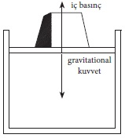

Isı görüngüsü, basit kuvvetlerle birbirlerini etkileyen taneciklerin hareketleri ile açıklanabilir mi? Örneğin, belirli bir sıcaklıkta, kütlesi belirli bir gazla, söz gelimi hava ile dolu, kapalı bir kap var. Kabı ısıtarak sıcaklığı yükseltiyor ve böylece, enerjiyi artırıyoruz. Peki ama, bu ısının hareketle bağlantısı nedir? Böyle bir bağlantı olabileceğini bize düşündüren, geçici olarak kabul ettiğimiz felsefi görüş açısıdır ve hareketin ısı doğurabilmesi gerçeğidir. Her problem mekanik bir problemse, ısı mekanik bir enerji olmalıdır. Kinetik teorinin ereği, madde kavramını tam bu biçimde ortaya koymaktır. Bu teoriye göre, bir gaz, her yönde hareket eden, birbirleri ile çarpışan ve her çarpışmadan sonra hareket yönünü değiştiren olağanüstü çok sayıda taneciğin, ya da molekülün bir kümelenmesidir. Büyük bir insan topluluğunda bir ortalama yaş ve ortalama zenginlik olduğu gibi, moleküllerin de bir ortalama hızı olmalıdır. Bundan ötürü, tanecik başına bir ortalama kinetik enerji olacaktır. Kapta daha çok ısı bulunması, daha büyük bir ortalama kinetik enerji demektir. Öyleyse ısı bu düşünüşe göre, mekanik enerjiden farklı özel bir enerji biçimi değildir, ama yalnızca molekül hareketinin kinetik enerjisidir. Her molekülün, her belirli sıcaklık için bir ortalama kinetik enerjisi vardır. Bu, gerçekte, keyfi bir varsayım değildir. Maddenin tutarlı bir mekanik tanımını yapmak istersek, bir molekülün kinetik enerjisini gazın sıcaklığının ölçüsü saymak zorunda kalırız.
Bu teori, hayal gücünün bir oyunu olmaktan öte bir şeydir. Gazların kinetik teorisinin yalnız deneyle uyuştuğu değil, ama olguların daha derinliğine anlaşılmasına da yol açtığı gösterilebilir. Bu, basit birkaç örnekle açıklanabilir.
Engellenmeden hareket edebilen bir pistonla kapatılmış bir kap alalım. Kapta, belirli bir sıcaklıkta tutulan belirli çoklukta bir gaz bulunmaktadır. Başlangıçta herhangi bir konumda durgun olan piston, üzerine ağırlık eklenerek aşağı doğru ve üzerinden ağırlık alınarak yukarı doğru hareket ettirilebilir. Pistonu aşağı doğru itmek için, kuvvet, gazın iç basıncına karşı kullanılmalıdır. Kinetik teoriye göre, bu iç basıncın mekanizması nedir? Gazı oluşturan pek çok sayıdaki tanecik her yönde hareket etmektedir. Tanecikler, kabın çeperlerine ve pistona çarpmakta, bir duvara atılan toplar gibi geriye sıçramaktadır. Bu sürekli bombalama, pistonu ve üzerindeki ağırlıkları aşağı doğru etkileyen yerçekimi kuvvetine karşı koyarak, pistonu belirli bir yükseklikte tutar. Bir yönde değişmez bir gravitational kuvvet, öbür yönde ise moleküllerin düzensiz vuruşları vardır. Bu pek çok, küçük ve düzensiz kuvvetin pistona yaptığı toplam etki, bir denge olmak gerekiyorsa, yerçekiminin etkisine eşit olmalıdır. [Şekil-22]

[Şekil-22]
Varsayalım ki piston aşağı doğru itilsin, gazı daha önceki hacminin bir kesimine, söz gelimi yarısına sıkıştırsın ve gazın sıcaklığı değişmeden kalsın. Maddenin kinetik teorisine göre, olmasını bekleyebileceğimiz şey nedir? Bombalamanın yarattığı kuvvet, öncekinden daha mı çok, yoksa daha mı az etkili olacaktır? Ortalama kinetik enerji hâlâ aynı olmakla birlikte, tanecikler şimdi pistona daha sık çarpacak ve böylece, toplam kuvvet daha büyük olacaktır. Kinetik teorinin sunduğu görüşe göre, pistonu bu aşağı konumda tutmak için daha çok ağırlık gerektiği bellidir. Bu basit deneysel olguyu herkes bilir; ama onun öngörülmesi, maddenin kinetik teorisinin mantıklı sonucudur.
Deneyimizin düzenlenişinde değişiklik yapalım. Hacimleri eşit iki farklı gazla, örneğin hidrojen ve nitrojenle dolu iki kap alalım. Gazlar aynı sıcaklıkta olsun. Bu iki gazın, ağırlıkları eşit, özdeş pistonlarla kapatıldığını varsayalım. Bu, kısaca, her iki gazın hacimlerinin, sıcaklıklarının ve basınçlarının aynı olması demektir. Teoriye göre, sıcaklık aynı olduğu için, tanecik başına düşen ortalama kinetik enerji de aynıdır. Basınçlar eşit olduğu için, pistonların ikisi de aynı toplam kuvvetle bombalanmaktadır. Her tanecik, ortalama olarak aynı enerjiyi taşımaktadır ve kapların hacimleri eşittir. Bundan dolayı, gazlar kimyasal bakımdan farklı olmakla birlikte, her kapta bulunan molekül sayısı eşit olmalıdır. Bu sonuç, birçok kimyasal görüngünün anlaşılması bakımından çok önemlidir. Bu demektir ki, belirli bir sıcaklıktaki ve belirli bir basınçtaki belirli bir hacimde bulunan molekül sayısı, belirli bir gazın değil, bütün gazların ayırıcı özelliğidir. Kinetik teorinin böyle evrensel bir sayının varlığını öngörmekle kalmayıp o sayıyı belirlememizi de sağlaması, gerçekten çok şaşırtıcıdır. Biraz ileride, bu noktaya gene döneceğiz.
Maddenin kinetik teorisi, gazların deneyle saptanan yasalarını, hem nicel, hem de nitel olarak açıklar. Bundan başka, en büyük başarıya bu alanda ulaşıyorsa da, teorinin geçerliliği yalnız gazlar için değildir.
Bir gaz, sıcaklığı düşürülürse, sıvılaştırılabilir. Maddenin sıcaklığında bir düşme, onun taneciklerinin ortalama kinetik enerjisinde bir azalma demektir. Bundan ötürü, bir sıvı taneciğinin ortalama kinetik enerjisinin, o taneciğe karşılık olan bir gaz taneciğininkinden daha az olduğu bellidir.
Sıvılardaki taneciklerin hareketi, ilk kez Brown hareketi denen şaşırtıcı bir görüngü ile gösterildi. Bu şaşırtıcı görüngü, maddenin kinetik teorisi olmasaydı, tümü ile gizemli ve anlaşılmaz olarak kalırdı. İlk kez botanikçi Brown’ın gözlediği bu hareket, seksen yıl sonra, yüzyılımızın başlangıcında açıklandı. Brown hareketini gözlemek için gereken araç yalnızca bir mikroskoptur. Mikroskobun çok iyi olması da gerekli değildir.
Brown, belirli bitkilerin çiçektozları ile, “çapları çoğu zaman bir parmağın dört binde birinden aşağı yukarı beş binde birine kadar (milimetrenin binde 5-6’sı) değişen taneciklerle” çalışıyordu.
Brown, gözlemini şöyle anlatır: “Suya koyduğum bu taneciklerin biçimlerini incelerken, birçoğunun açıkça hareket ettiğini gördüm... Sık sık yinelediğim gözlemlerden sonra, bu hareketlerin sıvıdaki akımdan ve sıvının yavaş yavaş buharlaşmasından ileri gelmediğine, taneciklerin kendi hareketleri olduğuna kesinlikle inandım.”
Brown’ın gözlediği şey, suya konulup mikroskopla görülen taneciklerin hiç durmayan kıpırtısıydı. Bu, dokunaklı bir görünümdür!
Belirli bitkilerin çiçektozlarını seçmek, bu olay için özellikle gerekli midir? Brown bu deneyi farklı birçok bitkinin çiçektozları ile yineleyerek bu soruyu yanıtladı ve yeterince küçük olan bütün taneciklerin, suya konulunca, böyle hareket ettiğini buldu. Bundan başka, küçük organik töz tanecikleri gibi, çok küçük anorganik taneciklerin de, bu hiç durmayan hareketi gösterdiklerini buldu. Bir akşam kelebeğinin bir parçasını toz durumuna getirip söz konusu deneyde kullandığı zaman bile, aynı olayı gözledi!
Bütün eski deneylerle çelişir görünen bu hareket nasıl açıklanmalıdır? Suya bırakılmış bir taneciğin konumunu, söz gelimi her otuz saniyede bir incelersek, taneciğin çizdiği garip yörüngeyi görürüz. Şaşırtıcı olan, hareketin asla değişmeyen karakteridir. Sallanan bir sarkaç, suya konunca, bir dış kuvvetle hareket ettirilmezse, çabucak durur. Asla azalmayan bir hareketin varlığı, bütün deneylere aykırı görünmektedir. Bu güçlük, maddenin kinetik teorisi ile çok güzel giderilmiştir.